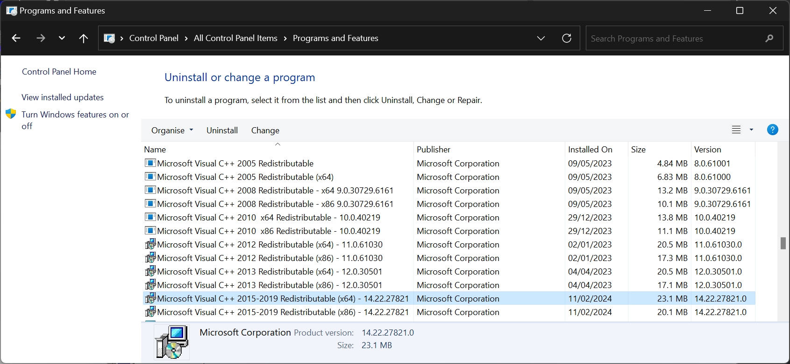
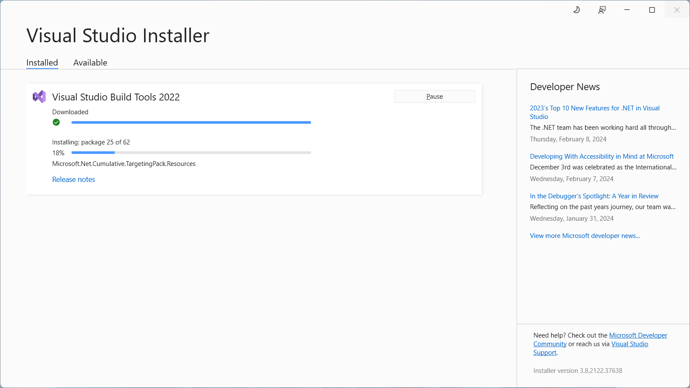

Stride doesn't run
Prerequisites
If you're having trouble running Stride, make sure you've installed all the prerequisites:
- .NET 8 SDK
- Visual C++ Redistributable 2019 (or later)
- .NET Framework 4.7.2 (required for the Visual Studio plugin)
- Visual Studio or Build Tools (optional but recommended)
Alternatively, uninstall Stride, restart the Stride installer, and install the prerequisites when prompted.
.NET SDK 8.0
.NET SDK 8.0 should have been installed by Stride prerequisite installer, if Visual Studio 2022 didn't do it previously.
If for some reason you need to install it manually, you can use this link and select the latest .NET 8 SDK for Windows.
Visual C++ Redistributable 2019 (or later)
To check if this is installed, see Control Panel > Programs > Programs and Features and look for 2015-2019 Redistributable.

If it's not installed, you can download the Redistributable from Visual Studio Downloads (under Other Tools and Frameworks). Make sure to install both x86 and x64 versions.
Note
If you see 2015-2022 Redistributable instead, it's ok. Since 2015, they are cumulative. Just make sure the last year is at least 2019.
.NET Framework 4.7.2 (or later)
To check if this is installed, follow the instructions on this page.
If it's not installed, you can download it from the Microsoft Download Center.
Note
If you have .NET 4.8 installed, you don't need to install .NET 4.7.2. Each 4.x version is cumulative.
Visual Studio 2022 (optional)
If you have Visual Studio 2022 (or later) installed, you need to have the following workloads and/or components installed:
- .NET desktop development with Development tools for .NET optional component enabled.
Note
Earlier versions might work with older version of Stride. However, for Stride 4.2 and later you only need to have .NET 8 SDK installed.
Build Tools for Visual Studio 2022 (optional)
If you don't have Visual Studio installed and don't want to install it, you can install Build Tools for Visual Studio instead. You can download this from Visual Studio Downloads (under Tools for Visual Studio).
You need to have the following workloads and/or components installed:
- .NET desktop build tools with .NET SDK optional component enabled.
Note
If you don't need Visual Studio, don't worry – it doesn't install it. 